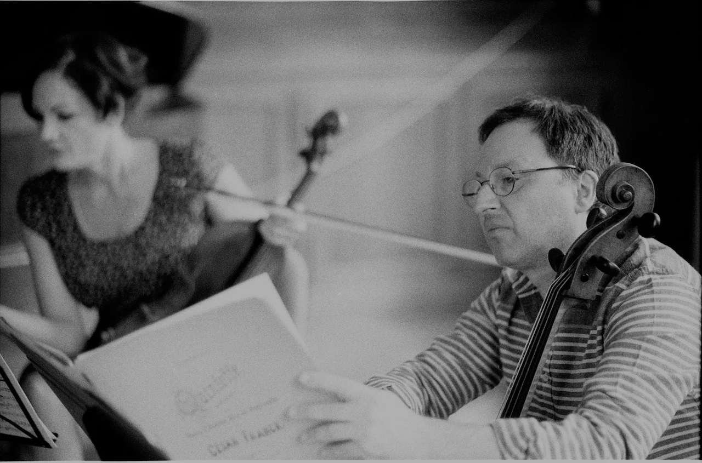

Premier mouvement
Deuxième mouvement
Troisième mouvement qui prend un peu plus de place

St. agur blue cheese cheese triangles cheesy grin. Manchego squirty cheese when the cheese comes out everybody's happy stilton cheese slices caerphilly roquefort manchego. Roquefort cheddar roquefort cheesy feet rubber cheese melted cheese mascarpone emmental. Stinking bishop blue castello cheese and wine rubber cheese mascarpone rubber cheese cauliflower cheese.
Il est toujours difficile de se présenter sans avoir la désagréable impression de se vendre.
Vincent Mons, notre cher camarade et ingénieur du son, a dit un jour de nous : « Le projet révolutionnaire de L’Armée des Romantiques peut ainsi se comprendre dans une puissante simplicité, par le souhait de dire quelque chose sur la société invoquant le réel de l’aujourd’hui et de l’humain ».
Cette phrase, que nous pouvons l’entendre dire dans l’épisode 9 des « Podcasts de L’Armée des Romantiques », pourrait en déstabiliser plus d’un tant il est peu habituel qu’un ensemble de musique classique puisse évoquer la vie de la cité et prétendre y prendre part en l’analysant sous l’angle de la production matérielle et économique.
Mais est-ce le rôle des artistes que de s’occuper de politique ? Poser la question c’est évidement y répondre.
L’artiste est souvent associé à la notion même de liberté. Mais comment créer librement sur le plan artistique sans être conscient de l’état de subordination qui règne chez les artistes ?
Cette quête de liberté ne date pas d’hier. La revendiquer aujourd’hui comme condition nécessaire à tout acte de création, nous invite à ouvrir les yeux sur les structures de domination qui financent le milieu musical classique : mécénat et marché public des subventions. Si nous savons faire la différence entre ces deux institutions, nous savons également que les artistes n’ont aucun pouvoir décisionnel sur ces structures. Alors comment débattre sereinement entre nous sur les enjeux esthétiques de l’art si notre survie économique dépend de décideurs extérieurs ?
Comme vous le voyez le milieu de la musique classique n’échappe pas aux enjeux des conditions matérielles, contrairement aux images d’Épinal qui nous font croire que les artistes seraient au delà des réalités du champ social.
C’est pour cela que L’Armée des Romantiques n’hésite pas à reprendre à son compte la phrase de Baudelaire : « Parler d’art d’une façon partiale, passionnée, et politique » .
L’Armée des Romantiques est un ensemble musical basé à Marseille. Son champ d’expression est la musique classique ou plus précisément la musique romantique jouée sur instruments historiques. Elle mène une analyse profonde sur l’esthétique romantique qui est aujourd’hui masquée par celle du néoclassicisme.
Son activité ne se limite pas aux concerts et aux disques. Sur ce site vous aurez accès gratuitement à tout ce que nous produisons : des podcasts, des vidéos, des enregistrements, des articles. Cet acte de gratuité nous est apparu comme la seule manière de produire librement. Sans devoir aller quémander sur le marché actuel de la musique qu’un producteur accepte de nous acheter, voire d’alimenter la rente capitaliste des plateformes collaboratives (comme cela est la norme aujourd’hui).
Mais cette production a un coût !
Si vous aimez notre travail et surtout si vous souhaitez voir, entendre et lire d’autres productions de L’Armée des Romantiques, vous pouvez nous soutenir financièrement en faisant un don. La sécurité sociale de la culture n’étant pas encore à l’ordre du jour (même si nous y travaillons collectivement au sein d’une autre structure), le financement direct par un public conscient des enjeux vertueux de la culture et des arts pour notre société, nous apparait comme la seule alternative économique à court et moyen termes.
En espérant que cette présentation, certes iconoclaste, mais sincère, vous donnera l’envie de découvrir L’Armée des Romantiques.
C’est sous la bannière de L'Armée des Romantiques que se sont rassemblés des compagnons fidèles tels que la mezzo contre-alto Lucie Roche, le violoniste Girolamo Bottiglieri le violoncelliste Emmanuel Balssa, l’altiste Caroline Cohen-Adad, le pianiste Rémy Cardinale et l’ingénieur du son Vincent Mons. Cette Armée bien singulière a pour ambition de réinterpréter les chefs d’œuvres de la musique de chambre du XIXe siècle sur instruments historiques, en repositionnant cette musique novatrice dans le contexte intellectuel et artistique de l’époque.
Les programmes des concerts de l’Armée des Romantiques visent à restituer l’atmosphère d’effervescence, de découverte et les débats passionnés qui animèrent tout le XIXe siècle. Dans cet esprit, le concert donne lieu à des commentaires et des explications par les interprètes sur le contexte historique, les partitions et les instruments, favorisant une écoute instruite entre les musiciens et le public.
L’Armée des Romantiques affirme son engagement pour l’interprétation sur instruments historiques qui s’avère être la seule réponse crédible pour rendre la modernité des œuvres jouées. Notre pratique régulière des instruments anciens nous amène à nous interroger sur l’héritage transmis par le XXème siècle. Leurs sonorités, leurs couleurs, leurs dynamiques, bousculent nos propres habitudes et certitudes sur l’interprétation des œuvres. Ce nouveau prisme sonore qu’offrent les instruments anciens, réactive notre écoute, bouleverse nos attentes et redonne une nouvelle jeunesse à un répertoire parfois figé dans le temps.
L'Armée des Romantiques est convaincue de l'importance qu'il y a de donner un autre sens à notre art. Les dérives actuelles que sont l'ultra médiatisation, le culte de la personnalité, la logique des modes, sont autant d'artifices qui nous empêchent de repenser l'art d'une manière sereine. La subversion à laquelle nous appelons, passera par une autre façon d’aborder le concert et par là, rendre l’écoute plus active, plus passionnée, plus joviale, plus réfléchie… Gageons que notre envie rende notre art un peu plus désirable pour le plus grand nombre.